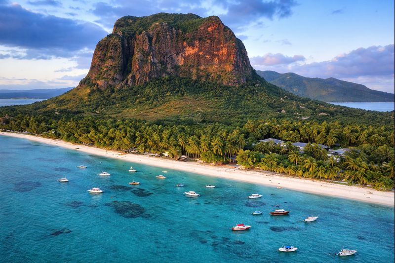

Côte Est
120k
L'Île aux Cerfs
Un lagon émeraude et des plages de sable blanc pour une journée paradisiaque

RetourUn kaléidoscope de cultures au cœur d'un lagon émeraude
L'Île Maurice est bien plus qu'une simple destination balnéaire de rêve. Située dans le sud-ouest de l'Océan Indien, cette île volcanique est une terre de contrastes et de métissages. Célèbre pour ses lagons turquoises et ses plages de sable fin comme celles de l'Île aux Cerfs, elle cache également des trésors naturels intérieurs fascinants. Des Terres des Sept Couleurs de Chamarel aux sommets majestueux du Morne Brabant, classé à l'UNESCO pour son importance historique, l'île invite à l'exploration. Sa véritable richesse réside dans son peuple, un mélange vibrant d'influences indiennes, africaines, européennes et chinoises, qui s'exprime à travers une gastronomie épicée, une hospitalité légendaire et le rythme enivrant du Séga.
Découvrez les 15 merveilles de l'Île Maurice
Un lagon émeraude et des plages de sable blanc pour une journée paradisiaque

Une curiosité géologique unique aux nuances chromatiques fascinantes

L'un des plus beaux jardins botaniques au monde, célèbre pour ses nénuphars géants

Une montagne majestueuse symbole de la lutte contre l'esclavage

Lac sacré au cœur d'un cratère, haut lieu de spiritualité hindoue

L'effervescence de la capitale, entre marché traditionnel et front de mer moderne

Un cratère volcanique éteint offrant une vue imprenable sur les sommets de l'île

Une réserve naturelle préservée abritant des espèces endémiques rares

Le poumon vert de l'île, paradis des randonneurs et des cascades

Une étendue infinie de sable blanc bordée de filaos, idéale pour les couchers de soleil

L'icône photographique de l'île, face aux îles du Nord

Le rendez-vous des dauphins au lever du soleil et spot de surf légendaire
Demeure coloniale historique au milieu de jardins tropicaux et cascades
Des lagons cristallins pour une journée de plongée libre inoubliable
Un aquarium naturel spectaculaire pour observer les coraux et les poissons tropicaux
L'unité dans la diversité, l'âme de Maurice.
L'Île Maurice est un exemple unique au monde de coexistence pacifique de cultures multiples. Cette "Nation Arc-en-Ciel" vibre au son des cloches des églises, des chants des muezzins et des prières dans les temples hindous. L'héritage de l'île est marqué par les vagues successives de peuplement : les esclaves venus d'Afrique et de Madagascar, les travailleurs engagés d'Inde et de Chine, et les colons européens. Cette mixité se retrouve partout : dans les rues colorées de Port-Louis, dans les rythmes du Séga (inscrit au patrimoine de l'UNESCO) et dans une langue créole chantante qui unit tous les Mauriciens.
La danse nationale, héritage des esclaves, rythmée par la ravanne et la maravanne.
La ferveur de Grand Bassin et les célébrations spectaculaires du Maha Shivaratree.
Les grandes demeures de style colonial et l'histoire sucrière de l'île, du Jardin de Pamplemousses à Eureka.
L'art de vivre mauricien se déguste à chaque coin de rue avec les dholl puri et gâteaux piment.

Les saveurs et l'artisanat d'exception de Maurice. Du rhum de Chamarel aux maquettes de bateaux.
 Prestige
Prestige
Rhum de dégustation médaillé, produit artisanalement au coeur des plantations de canne.
 Gourmet
Gourmet
Vanille Bourbon d'une qualité exceptionnelle, parfumée et charnue, cultivée localement.
 Artisanat
Artisanat
Réplique fidèle réalisée entièrement à la main en bois précieux, spécialité de Curepipe.
Sélection de sucres naturels de canne aux arômes subtils, du Demerara au Muscovado.
Écharpe d'une douceur infinie, tissée dans les manufactures de l'île pour les plus grandes marques.
Le thé noir emblématique de l'île, aux notes douces et parfumées de vanille naturelle.

Grand Baie, Ultra-Luxe

Grand Gaube, Design & Chic

Poste de Flacq, Élégance

Belle Mare, Iconique

Trou d'Eau Douce, Exclusif

Beau Champ, Resort & Spa
La cuisine mauricienne est un festin de saveurs, fusionnant les traditions indiennes, chinoises, européennes et créoles.
Le snack national : galettes de pois cassés farcies de curry et rougaille.
Plat d'influence chinoise avec riz, légumes, viande et un œuf au plat sur le dessus.
Nouilles sautées à la chinoise avec légumes, poulet ou crevettes.
Sauce tomate créole épicée, base de nombreux plats mauriciens.
Riz basmati parfumé aux épices, poulet ou agneau, spécialité de la communauté musulmane.
Boulettes de pois cassés frites, croustillantes et relevées, idéales à l'apéritif.
Spécialité de saison, viande de cerf mijotée dans une sauce masala onctueuse.
Poisson frit et mariné dans une sauce au vinaigre, moutarde et curcuma.
Boisson lactée rafraîchissante aux graines de basilic et gelée d'agar-agar.
Ananas ou mangues vertes servis avec un mélange de sel et de piment fort.
Fraîchement pêché et grillé avec du beurre d'ail, persil et citron.
Sablé fondant fourré à la confiture et recouvert d'un glaçage rose iconique.
Partagez la ferveur et la joie de vivre mauricienne lors des célébrations annuelles.
La plus grande procession hindoue vers Grand Bassin (Février/Mars), un moment de ferveur unique.
Célébration de la culture, de la langue et de la musique créole à travers toute l'île (Octobre/Novembre).
Célébrations nationales (12 Mars) avec parades, concerts et feux d'artifice dans toute l'île.
La période idéale pour visiter l'île. Le climat est sec, ensoleillé et les températures sont agréables (20-25°C). Parfait pour toutes les activités, de la plage à la randonnée.
Saison chaude et humide, avec des risques de cyclones. C'est cependant la meilleure période pour la plongée (eaux cristallines) et pour profiter des fruits tropicaux.
L'île est sûre. Vigilance habituelle sur les lieux touristiques. Les Mauriciens sont extrêmement accueillants et serviables.
Conduite à gauche. Louer une voiture est idéal, mais le réseau de bus couvre toute l'île de manière pittoresque.
Exemption de visa pour la plupart des nationalités touristiques (UE, Suisse, Canada). Passeport valide 6 mois après le retour.
Roupie Mauricienne (MUR). Distributeurs automatiques disponibles partout. Cartes bancaires acceptées dans la plupart des commerces.
Expert Lagons & Mer
Natif du Nord, Yannick vous fera découvrir les secrets des îles du Nord et les plus beaux spots de plongée.
Experte Culture & Spiritualité
Passionnée par l'histoire de son île, Priya vous guidera à travers les temples, marchés et sites historiques de Maurice.
Guide Nature & Randonnée
Expert des Gorges de la Rivière Noire, Raj vous accompagnera sur les sommets pour des vues à couper le souffle.